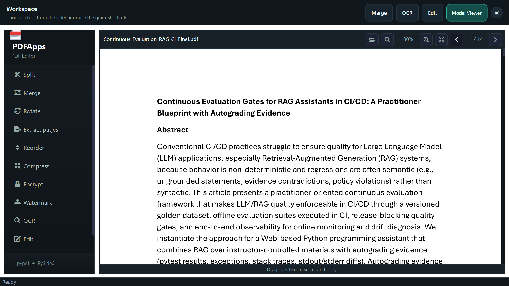
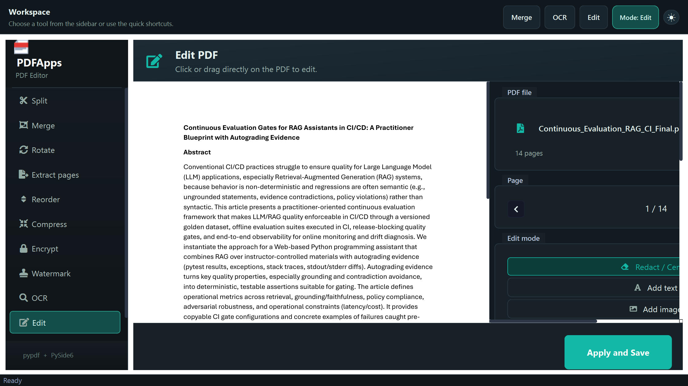
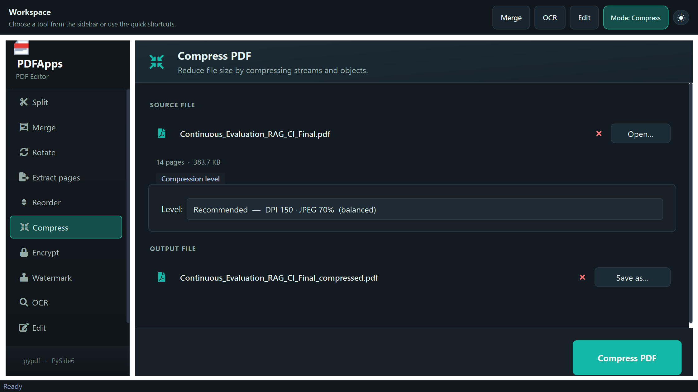
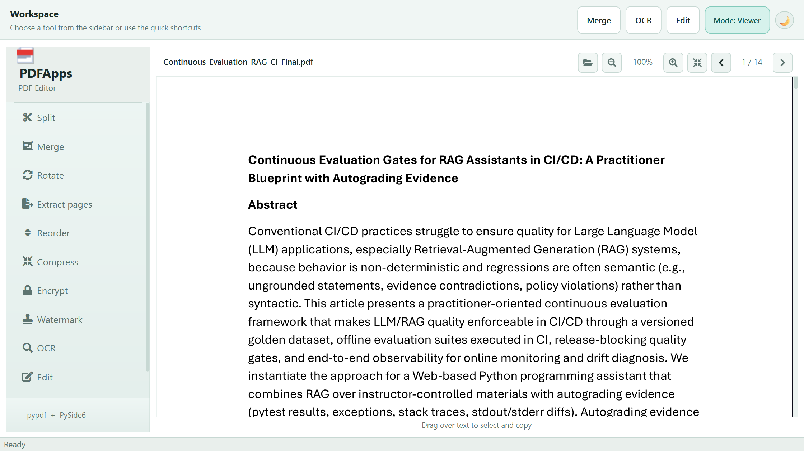

11 powerful tools in one app. 100% offline, free forever, no accounts needed. Your files never leave your computer.
View source on GitHub · v1.5.0
11 built-in tools that cover every common PDF task. No plugins, no add-ons, no internet required.
Extract page ranges
Combine multiple PDFs
Rotate any page
Pull out specific pages
Drag & drop pages
3 compression levels
Password protection
Stamp overlay
5 languages supported
PNG, JPG, DOCX, TXT
Redact, text, images
PDF metadata & properties
Built for people who care about privacy, simplicity, and not paying for basic tools.
Your files never leave your computer. No uploads, no cloud processing, no data collection. Complete privacy by design.
Open source and MIT licensed. No subscriptions, no trials, no feature locks. Every tool is yours to use, forever.
Runs natively on Windows, macOS, and Linux. Same experience everywhere, built with Python and PySide6 (Qt 6).
A clean, modern interface designed for productivity.




A quick guide to get you started with every feature.
Click the folder icon in the toolbar, drag and drop a file onto the window, or double-click a PDF associated with PDFApps. The viewer loads instantly with continuous scroll.
Use the page input field in the toolbar to jump to any page. Type a number and press Enter. Use the arrow buttons to go to the previous or next page.
Use the + / − buttons in the toolbar or Ctrl + Scroll to zoom. Click Reset to return to the default zoom level.
Click any tool in the sidebar (Split, Merge, Rotate, etc.). Select your PDF, adjust the settings, and click Run. The output file is saved automatically.
Click Edit in the sidebar to open the visual editor. Choose a mode from the right panel:
Use Ctrl+Z / Ctrl+Y to undo/redo. Click Save to apply all edits.
Notes appear as pencil icons. Click to toggle the popup balloon. Right-click on a note icon to delete it. Annotations are saved in the PDF and visible in any PDF reader.
Use the Convert tool to export PDF pages to PNG, JPG (with DPI selector), DOCX (Word), or TXT (plain text).
Use the OCR tool to extract text from scanned PDFs. Requires Tesseract installed. Supports Portuguese, English, Spanish, French, and German.
Click the sun/moon icon in the top-right corner to toggle between dark and light themes.
See how PDFApps stacks up against the most popular PDF tools.
| Feature | PDFApps | Adobe Acrobat | iLovePDF | Smallpdf |
|---|---|---|---|---|
| Works Offline | ✓ | ✓ | ✗ | ✗ |
| Completely Free | ✓ | ✗ | ◉ | ◉ |
| Open Source | ✓ | ✗ | ✗ | ✗ |
| No Account Required | ✓ | ✗ | ✓ | ✗ |
| Visual Editor | ✓ | ✓ | ✗ | ◉ |
| OCR | ✓ | ✓ | ✓ | ✗ |
| Cross-Platform | ✓ | ◉ | ✓ | ✓ |
✓ Yes ◉ Partial / Limited ✗ No
Download PDFApps for free and start working with your documents offline.